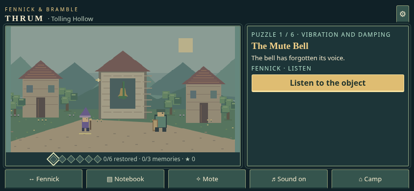

Fennick & Bramble — Thrum
Status: development on hold, not cancelled. Two offline browser prototypes exist. Version 0.2.0 introduces adjustable mechanisms, hero swap, position controls, and puzzle resets. Detailed art, native builds, general physics and simultaneous co-op are not implemented yet.

Working title: Thrum (proposed) · Draft v0.2 · Prepared for Peter · 24 November 2026
At a glance
- What it is: a cozy, richly detailed pixel art co-op puzzle adventure for ages 3 to 70.
- Heroes: Fennick (tinkering mage) and Bramble (gentle protector).
- Core idea: a forgotten guardian's hum held the world together. It is fading, so sound drains away and things come apart. Players fix it by listening, solving real-physics puzzles as a pair, and helping people remember.
- Scope: 6 regions, about 50 puzzles, roughly 6 to 8 hours of play.
- Platforms: mobile first, then PC, Mac, and Linux.
- World: standalone, not set in Harrowick.
- Feel: easy to learn, fun to play, no combat, no death, no punishing failure.
1. Vision
Two heroes travel a world whose guardian has been forgotten. The hum that kept everything in tune is fading. Nobody is the enemy; the cause is forgetting. You progress by understanding, never by defeating.
Design pillars
- Easy to learn, fun to play. The core loop is understood in under a minute with no reading.
- Two layers everywhere. Play by feel, or go deeper into why it works.
- Always together. No puzzle can be solved by one hero alone.
- Empathy is the mechanic. Every region's problem is solved by understanding someone.
- Kitchen-table science. Every puzzle could be tried with real objects.
- Warm, never grim. Danger is gentle, and humor runs on two tracks: slapstick for kids, dry wit for adults.
2. Story
Premise. Long ago a guardian called Thrum (working name) kept the world in tune with a low, constant hum. It never asked for anything. Each year people rang the bells for the Thanking, a festival of thanks for the hum. Over generations the festival shrank, then stopped. The hum was so constant that people stopped hearing it, then stopped remembering where it came from. Without attention or thanks, Thrum grew quieter and finally fell silent. Now sound is draining from the land, and everything the hum held together is coming loose.
Visual device. The world starts desaturated and quiet. Each restored region regains color and adds a layer to the music, so progress is both seen and heard.
Structure
- Act I, Tolling Hollow. Fennick's notebook shows the hum is failing. The heroes ring the first bell in generations and learn about the Thanking.
- Act II, four regions. Each region has a broken note of the hum and villagers who remember Thrum. Solving puzzles unlocks memories, and memories restore the note.
- Midpoint, Glimmerdeep. The heroes glimpse Thrum's shape for the first time: vast, curled, still. It is not a monster.
- Act III, the Hollow Heart. Every note must be played together. The finale is a Thanking held by the whole world, and Thrum wakes because it is finally remembered.
- Epilogue. Bells ring across the world. Someone thanks Bramble.
3. Characters
Fennick (mage, the Diagnoser). Small, curious tinkerer with a hat full of jars and a notebook that draws what Fennick learns. Flaw: tests before listening, causing funny, harmless mishaps. Arc: learns to listen first.
Bramble (tank, the Holder). Big, patient, and kind, with a shield that doubles as a bridge, a shelter, and a lever. Flaw: carries everything alone and never asks for help. Arc: learns to accept help and to be thanked.
Thrum (the fallen guardian). Vast and ancient, known only through memories until the midpoint. Suggested design: part creature, part landscape, so some hills the heroes have crossed turn out to be its curled body. Seed this early with background hills that rise and fall very slowly, like breathing. Thrum never speaks in words; it hums.
Mote (companion and hint system). A tiny hum-moth. It circles whatever needs attention, glows brighter near the solution, and flutters away from wrong guesses. As the hum returns, Mote grows brighter and more colorful, acting as a progress meter a 3-year-old can read.
Memory keepers. Each region has two or three villagers who hold a memory of Thrum (listed per region). Each memory is a short sound fragment with a small animated scene.
4. Core mechanics
Verbs
Fennick
- Listen: shows sound, flow, or vibration as a visible pattern on an object.
- Test: try an item or setting. Wrong tries give funny, harmless results.
- Tune: adjust a size, length, angle, or mix.
- Tinker: swap or connect parts.
Bramble
- Brace: hold something steady.
- Lift: raise or carry an object.
- Shelter: shield a spot from rain, falling debris, or wind.
- Bridge: lay the shield across a gap.
Shared
- Duet: both heroes press and hold together, and their hums join on screen. Used to finish every region.
Rules
- Pair rule. Every puzzle runs Diagnose (Fennick), Support (Bramble), Solve (both). Each step unlocks the next.
- Solo play. One player controls both with a swap button; the idle hero holds position automatically.
- Co-op. Two players on one screen, so a child and a grandparent can each own a hero.
- No fail states. A wrong try gives a funny result and resets in seconds. Mote hints gently after about 20 seconds without progress, then more clearly.
- Memory collection. Three memories per region; each adds a layer to the music.
Three layers of depth
- By feel. Follow Mote and try things. Enough to finish the game.
- Notebook. One tap shows a drawing and a line of text or audio explaining why it worked.
- Try it at home. A card with a real experiment using household objects.
Optional: an Elegant Solution star for solving a puzzle the way the science intends instead of by brute force.
Modes
- Cozy: extra hints and auto-assist.
- Curious: the default.
- Tinkerer: bonus puzzles and fewer hints.
Mobile-first controls
- Landscape only. Keep every puzzle inside a safe area and let backgrounds extend past it for tall phone screens.
- Tap-to-move and tap-to-act with large touch targets. Hero swap is one tap.
- Duet is a two-finger or two-thumb hold, which also works as two people each pressing one side of a tablet.
- Main co-op on mobile: two players on one tablet, each owning a hero. Phones get solo play with swap. Gamepad co-op arrives with the desktop release.
- Auto-save after every puzzle, and design each puzzle for a 3 to 5 minute session.
Accessibility
No required reading (icons, color, pattern, and sound all carry meaning); colorblind-safe palettes with shape cues; read-aloud notebook; adjustable timing; one-button mode; hold instead of mash.
5. Puzzle template and worked example
Template
- Setup. Something is broken or silent, and Mote circles it.
- Diagnose (Fennick). Listen reveals the problem as a visible pattern.
- Support (Bramble). Hold, lift, or shelter so Fennick can act safely or reach.
- Solve. Fennick tunes or tinkers while Bramble supports.
- Payoff. A sound, light, or animation reward plus a notebook page. Every third puzzle yields a memory.
Worked example: Puzzle 1, The Mute Bell
- Setup: the village bell hangs silent and Mote circles it.
- Diagnose: Fennick listens, and the bell shows a flat line with a glowing spot at the rim where a vine presses against it.
- Support and Solve: Bramble lifts the vine away. The bell rings, and villagers look up for the first time.
- Notebook: a bell has to wobble to sing, and touching it stops the wobble.
- Try it at home: tap a glass or metal pot, then touch it and hear the sound stop.
- Elegant Solution star: remove the vine without bumping the bell.
- Story beat: carved on the bell is the old thank-you pattern, the first clue about the Thanking.
6. Regions and puzzles
Region 1: Tolling Hollow (6 puzzles, tutorial)
Science: sound, vibration, structure. Look: a warm hillside village full of silent bells.
Story: the village once held the Thanking. Ringing the first bell in generations reminds people it ever existed.
Memory keepers: Tamsin, the old bell-ringer who stopped ringing because nobody listened; Odo, a child who hums a lullaby nobody can trace; Hob, the baker who wakes before dawn to a sound he cannot name.
Introduces: all verbs, Mote, the notebook, and the Duet.
- The Mute Bell. Fennick finds the muffling vine; Bramble lifts it. Vibration and damping.
- The Leaning Tower. Bramble braces the beam while Fennick swaps a square brace for a triangle. Triangles hold their shape.
- The Stuck Mill Wheel. Fennick re-meshes the gears while Bramble holds the wheel still. Gears and direction of rotation.
- The Well Lever. Fennick chooses counterweights while Bramble holds the pivot post. Levers and balance.
- The Bell Choir. Fennick tunes three bells by size while Bramble steadies them. Bigger means lower pitch.
- The Chime. Duet: one bell sets the next ringing until the whole village chimes. Sympathetic resonance.
Region 2: Reedwater (9 puzzles)
Science: water and flow. Look: a marsh town on stilts, with ferries and herons.
Story: ferry folk and herons each assume the other stilled the river. The heroes show it is the fading hum, and both sides soften.
Memory keepers: Marl, the ferrywoman with a river-song; Wick, the heron elder with a dawn-call; a fisher child who saw the river move on its own once.
Introduces: sorting and routing puzzles with Test. Fennick rushes and floods a dock, a comic beat.
- The Floating Ferry. Fennick tests which cargo floats; Bramble carries the sinkers. Buoyancy and density.
- The Plugged Channel. Fennick listens for the gurgle; Bramble clears the blockage. Flow and blockage.
- Lock and Level. Fennick opens sluices; Bramble holds the gate. Water finds its level.
- Stilt Walk. Bramble braces stilts while Fennick levels their lengths. Wide bases are stable.
- Mud to Clear. Fennick layers sand, gravel, and charcoal; Bramble holds the sieve. Filtration.
- The Heron's Pond. Bramble shelters the nest; Fennick refills the pond with a siphon. Siphons and pressure.
- The Whirl. Fennick spins a paddle; Bramble blocks the eddy. Currents and vortices.
- The Barrel Chain. Fennick routes pipes; Bramble lifts barrels uphill. Gravity-fed flow.
- The River Remembers. Duet: Fennick tunes ripples while Bramble channels the river so it carries the note. Waves in water.
Region 3: Glimmerdeep (9 puzzles)
Science: light and shadow. Look: an underground town of mirror-makers and glow-mushrooms, lights guttering.
Story: Pell the lamplighter is afraid of the dark now that the glow has faded. Bramble sits with Pell, and the heroes learn what the dark means to someone small.
Memory keepers: Pell, who remembers Thrum's glow; Sorrel, the mirror-maker who inherited an unfinished mirror; a glow-mushroom grower with a lantern song.
Introduces: continuous angle and rotation control. Midpoint: the final puzzle reveals Thrum's shape.
- The Dark Lamp. Fennick lights the lamp; Bramble holds the mirror. Reflection.
- The Shadow Door. Fennick moves the light to resize a shadow; Bramble holds the shape. Shadows and distance.
- The Prism Bridge. Fennick angles a prism; Bramble holds it steady. Refraction and color.
- The Color Lanterns. Fennick mixes colored lights; Bramble carries filters. Color mixing.
- The Mirror Maze. Fennick sets mirrors; Bramble braces them. Angle in equals angle out.
- The Mushroom Garden. Fennick keeps the mushrooms lit; Bramble shades the ones that wilt. Light and living things.
- The Lens Window. Fennick focuses a lens; Bramble holds the frame. Magnification.
- The Shadow Clock. Fennick reads the shadow; Bramble turns the stone. Shadows and time.
- The Mirror Choir. Duet: beams bounce to tune the crystals, and Thrum's shape appears in the light. Light as pattern.
Region 4: Thistledown Terraces (9 puzzles)
Science: growth and ecosystems. Look: terraced farms and orchards that change with day and night.
Story: Granny Oake stopped tending the orchard because nothing she planted answered. The crows are not pests; they are hungry, and the heroes learn to see it.
Memory keepers: Granny Oake, who remembers the orchard waking to the hum; the beekeeper, with a hive song; the scarecrow-maker, who talks to crows.
Introduces: time. Puzzles span a day and night cycle, with wait-and-return steps.
- The Sleeping Seed. Fennick tests water, sun, and soil; Bramble carries soil. What seeds need.
- The Terrace Wall. Bramble rebuilds the wall; Fennick adds drainage. Erosion and drainage.
- The Compost Heap. Fennick balances greens and browns; Bramble turns the heap. Decomposition.
- The Bee Path. Fennick plants a flower trail; Bramble shelters the hive. Pollination.
- The Climbing Beans. Fennick places a trellis; Bramble props it. Plants grow toward light and support.
- Root and Rock. Fennick listens for roots; Bramble moves the rock. Roots and soil layers.
- The Frost Night. Bramble covers the crop; Fennick sets warm lamps. Insulation.
- The Scarecrow Whisperer. Fennick decodes the crows; Bramble builds a feeding post. Ecosystems.
- The Orchard Sings. Duet: pollinators hum together and the orchard blooms. Many small signals add up.
Region 5: Emberforge (9 puzzles)
Science: heat and energy. Look: a forge-town on a warm hillside, furnaces cold.
Story: Dagna the smith is gruff; Kit, the apprentice, hid a mistake that went cold with the forge. Kit offers to carry part of a load, and Bramble accepts.
Memory keepers: Dagna, who remembers the forge never needing relighting; Kit, who heard the hum in the anvil; a charcoal burner with a work song.
Introduces: chained systems where one result powers the next.
- The Cold Forge. Fennick lays kindling for airflow; Bramble works the bellows. Fire needs air.
- The Hot Handle. Fennick picks materials; Bramble carries the hot piece. Conductors and insulators.
- The Tight Gap. Fennick heats or cools the ring; Bramble holds the shaft. Thermal expansion.
- The Pulley Lift. Fennick rigs the pulley; Bramble hauls. Mechanical advantage.
- The Ramp. Fennick builds the ramp; Bramble steadies the load. Inclined planes.
- The Steam Whistle. Fennick boils; Bramble caps the vent. Steam and pressure, kept safe.
- The Wheel Chain. Fennick links water wheel, gears, and bellows; Bramble braces the frame. Energy transfer.
- The Rusted Anvil. Fennick treats the rust; Bramble holds the anvil. Oxidation.
- The Forge Hums. Duet: hammer rhythm matched to the forge. Rhythm and frequency.
Region 6: The Hollow Heart (8 puzzles, finale)
Science: everything combined. Look: a vast resonant cavern where Thrum sleeps, desaturated until the last puzzle.
Story: villagers from every region arrive, carrying their memories. The finale is the Thanking, held for Thrum.
Introduces: nothing new; every earlier mechanic returns in combination.
- The Long Stair. Brace and re-brace the steps. Structure.
- The Silent Organ. Tune pipe lengths. Sound and pitch.
- The Hanging Waters. Route a cavern stream. Flow.
- The Dim Vault. Direct light with mirrors. Reflection.
- The Overgrown Door. Guide roots and vines. Growth.
- The Cold Furnace. Relight the heart furnace. Heat and air.
- The Memory Chamber. Place every collected memory in order. Listening and remembering.
- The Wake. Duet: Fennick conducts and Bramble holds the note as every memory joins in. Thrum wakes.
7. Progression
- Hollow: all verbs, one step each.
- Reedwater: Test, sorting, and routing; two-step puzzles.
- Glimmerdeep: continuous angle control; three-step puzzles.
- Thistledown: time, with wait-and-return puzzles.
- Emberforge: chained systems.
- Hollow Heart: combinations only, no new verbs.
Rule: introduce one new idea per region and reuse everything else.
8. Character arcs by region
- Hollow: baseline. Fennick tests fast; Bramble carries everything.
- Reedwater: Fennick rushes and floods the dock. Bramble refuses a ferrywoman's offer of help.
- Glimmerdeep: Bramble sits with Pell and recognizes a little of the lonely guardian in Pell's fear.
- Thistledown: Fennick stops and listens first, and the puzzle opens.
- Emberforge: Kit offers to carry, and Bramble accepts.
- Hollow Heart: Fennick listens, Bramble is helped, and the world thanks them both.
9. Art, audio, and technical direction
Items marked proposed are recommendations awaiting your confirmation.
- Art (proposed): internal resolution of 480x270, scaled up in whole-number steps. Heroes around 32x48 pixels, or about 40x56 if they are hard to read on small phones. Put extra detail into backgrounds, lighting, and parallax rather than tiny sprites.
- Voice (proposed): no spoken words. Characters speak in expressive, instrument-like sounds. The notebook carries text with optional read-aloud, which also keeps localization cheap.
- Music (proposed): a constant drone in a fixed key is the hum, always present. Each region adds an instrument family: bells (Hollow), woodwinds and water percussion (Reedwater), glass and harp (Glimmerdeep), plucked strings (Thistledown), percussion and brass (Emberforge), choir (Hollow Heart). Everything stays in key, so any combination sounds good. Stream the layers to keep the mobile download small.
- Science accuracy: have each notebook page checked against a reliable source, and playtest each Try-it-at-home card with real objects.
- Engine (open):
- Godot: one codebase exports to iOS, Android, Windows, Mac, and Linux, with strong 2D support.
- TypeScript with Phaser and Capacitor: reuses your existing stack, but needs more care around mobile performance and desktop packaging.
10. Release and pricing approach
- Platform order (decided): mobile first, then PC, Mac, and Linux.
- Tension to resolve: your goal is a game worth at least $20, but premium mobile games generally sell for much less than that, while PC supports higher prices more comfortably. Check current store prices for comparable titles before fixing numbers.
- Suggested model (proposed): a free first region (Tolling Hollow) with a one-time unlock for the full game. No ads and no in-app purchases, which suits a family audience. Set the PC price higher at its own launch.
- Staged release (proposed): prototype Tolling Hollow, add two more regions for early access at a lower price, then complete the remaining regions and raise the price at 1.0.
11. Prototype plan
Build a vertical slice of Tolling Hollow: 6 puzzles, 3 memories, the Duet, Mote, the notebook, and the village chime.
Success tests
- A 4-year-old with a parent finishes Puzzle 1 without reading.
- A teenager or adult finds at least one notebook page worth reading.
- Two players of different ages share one tablet without fighting over control.
- The slice runs at a steady frame rate on a mid-range phone.
- Most playtesters finish the Hollow and want more.
- The village chime gets a visible, emotional reaction.
Track your real hours on the first puzzle to calibrate the schedule for the remaining 44.
12. Decisions log
| Decision | Status |
|---|---|
| Standalone world (not Harrowick) | Decided |
| Two heroes: Fennick and Bramble | Decided |
| Cause: a fallen guardian, forgotten | Decided |
| Merged premise: the Quiet plus the Unmending | Decided |
| Platforms: mobile first, then PC/Mac/Linux | Decided |
| Title: Thrum | Proposed |
| Thrum as creature-landscape | Proposed |
| Sprite resolution and screen setup | Proposed |
| No spoken words | Proposed |
| Layered-drone music approach | Proposed |
| Free first region plus one-time unlock | Proposed |
| Engine: Godot or TypeScript stack | Open |
| Final pricing | Open |
Development handoff
See the archive notes and roadmap for implementation status and remaining work.